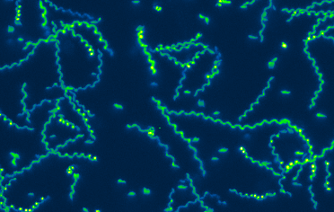

Nearly one third of the world’s population is infected with Toxoplasma gondii. Although most infections are asymptomatic, toxoplasmosis can be life-threatening during pregnancy and in people with immune systems weakened by immunosuppressants or AIDS. Our lab studies two aspects of the T. gondii life cycle, each of which is critical to the parasite’s ability to cause disease: host cell invasion and parasite motility. A better understanding of the cell biological mechanisms underlying these two processes is important to the development of new approaches to treating toxoplasmosis. T. gondii is also a powerful model for studying the mechanisms of invasion and motility in related apicomplexan parasites, including those that cause malaria and cryptosporidiosis.ated apicomplexan parasites, including those that cause malaria and cryptosporidiosis.
Our work is multidisciplinary, combining forward and reverse genetics, advanced live-cell imaging, biophysics, proteomics, chemical biology, and mathematical modeling. We collaborate extensively with synthetic chemists and experts in myosin motor function, structural biology, and electrophysiology.
Invasion: AMA1 Proteins
T. gondii can only multiply within cells of its hosts, and repeated cycles of host cell invasion, parasite multiplication and host cell lysis cause tissue damage during acute infection. One major goal of our research is to identify T. gondii proteins that play a role in host cell invasion and determine exactly what these proteins do, with a focus on the highly conserved protein, apical membrane antigen 1 (AMA1). AMA1 is a type I transmembrane protein with a large extracellular domain and a short cytosolic tail. It is secreted onto the parasite surface, where it directly mediates the physical interaction between the parasite and host cell. Remarkably, the extracellular domain of AMA1 on the parasite surface binds to a receptor on the host cell (RON2) that is inserted into the host cell membrane by the invading parasite itself, i.e., the parasite inserts its own ligand for AMA1 into the host cell plasma membrane. We are currently studying two aspects of T. gondii AMA1 critical to its role in mediating invasion: (a) the function of its cytosolic tail and (b) why and how the extracellular domain of AMA1 is cleaved and shed from the parasite surface during invasion.
Invasion: Rhoptry Secretion
One of the most important events that occurs during invasion is injection of parasite proteins into the host cell. These proteins are released from the rhoptries, highly specialized secretory organelles at the apical end of the parasite. The different injected proteins serve a variety of key functions: some are necessary for parasite attachment and invasion (such as RON2, thew ligand for AMA1 mentioned above), some act later to counter host immune defenses, and others directly manipulate host gene expression to the parasite’s advantage. It is therefore not surprising that the injected effector proteins include some of the most important virulence factors expressed by the parasite. Despite the well-established importance of the rhoptry effector proteins for parasite survival and virulence, we do not understand how these proteins are injected into the host cell during invasion. In addition to being a fascinating problem of fundamental cell biology, understanding the underlying mechanism(s) is of potential therapeutic importance, since targeting the injection process will simultaneously disrupt the delivery into the host cell of many of the parasite’s most critical virulence factors. The injection of rhoptry effector proteins into the host cell occurs in all apicomplexans examined, so our efforts to understand this process are likely to be directly applicable to other apicomplexan pathogens as well
Motility
T. gondii and other apicomplexan parasites use an unusual form of substrate-dependent gliding motility to travel to and egress from the host cells they invade, to disseminate through the infected host’s tissues, and to cross biological barriers. T. gondii MyosinA (TgMyoA) is a myosin motor protein that plays a central role in parasite motility, and a member of an unusual class of myosin motor proteins (class XIVa) found only in apicomplexan parasites and a few ciliates. Parasites lacking TgMyoA are severely impaired in motility and completely avirulent. The long term goal of this project is to understand parasite motility across the full range of scales – from the biochemical, biophysical, and structural properties of the TgMyoA motor, to how the motor drives the complex pattern of motility seen within model 3D extracellular matrices, to connecting specific aspects of motor function to the ability of parasites to disseminate and cause disease in infected animals.
To see movies of moving and invading parasites, click here
To see some of our recent publications on these topics, click here
